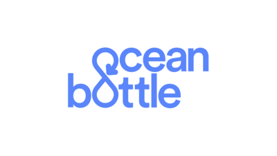

My Experience
Ocean Bottle
July 2019 - October 2019
Worked as a consultant for a sustainable startup which funds the removal plastic bottles from the oceans. As a consultant I worked to build backend systems integrating Google Analytics and Python-Django to ensure that the brief was fulfilled.
I was the designated team leader in the project and I worked as a liaison with Ocean bottle and my team to coordinate strategy.
Newman & Associates
June 2010 - 2017
Aged 14 I worked for my family’s surveying company until I left for university in September 2017. This work was physical, practical and social, including using a variety of tools and machinery on projects and regular contracts. Other aspects included customer liaison, promotion of the company and office work.
On site dealing and understanding issues with building control. Experience with admin in the company’s office with Excel, taking phone calls from potential clients and advising clients on court cases. Experience dealing with clients and selling technical concepts to them. A good grasp of engineering practicality and viability of objects, loading stresses and other technicalities.

Personal Tutor
October 2016 - Present
Tutoring 10 sixth formers in Mathematics, achieving on average one grade band improvement on predicted or previous grades
Maintaining positive relationships with parents to retain business and generate word of mouth, explaining hard concepts to parents with limited knowledge of maths
Engaging new clients using a range of online platforms including Tutora, TutorHunt, and TutorFair.